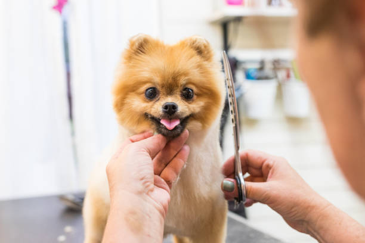

Our Pet Care Services

Pet Grooming
Our professional pet grooming service helps maintain the hygiene, comfort, and appearance of your beloved pets. Regular grooming is essential not only for keeping your pet clean but also for preventing skin problems, matting, and unpleasant odors. Our trained grooming specialists carefully handle each pet with patience and care while providing services such as bathing, fur trimming, coat brushing, nail clipping, ear cleaning, and skin conditioning. We use high-quality pet-safe products that protect your pet’s coat and keep their skin healthy. With our grooming services, your pets will always look neat, fresh, and happy.

Dog Walking
Daily exercise is extremely important for a dog’s physical health and emotional well-being. Our professional dog walking service ensures that your dog gets the activity and outdoor time they need even when you have a busy schedule. Our experienced dog walkers take pets on safe and enjoyable walks where they can explore, play, and stay active. Regular walks help improve fitness, reduce anxiety, and prevent destructive behavior caused by boredom. We follow safe walking routes, maintain proper control, and ensure that every dog receives the attention and exercise they deserve.
Pet Boarding
When you need to travel or stay away from home, our pet boarding service provides a safe and comfortable place where your pets can stay happily. Our boarding facility is designed to create a stress-free environment with cozy resting areas, proper feeding schedules, and supervised playtime. Our staff ensures that each pet receives individual attention and care throughout their stay. We maintain clean and hygienic surroundings and monitor pets regularly to ensure their health and comfort. With our reliable boarding services, you can travel peacefully knowing your pet is in caring hands.

Pet Training
Proper training helps pets develop positive behavior and strengthens the bond between pets and their owners. Our pet training programs are designed to teach essential commands, obedience skills, and social behavior in a safe and friendly environment. Our experienced trainers use gentle and effective training techniques that focus on encouragement and positive reinforcement rather than punishment. Whether your pet needs basic obedience training, leash training, or behavioral improvement, our training sessions help them become disciplined, well-behaved, and confident companions.

Veterinary Assistance
Your pet’s health and wellbeing are our top priorities. Our veterinary assistance service helps pet owners manage routine health care needs such as basic health monitoring, vaccination reminders, and guidance on preventive care. We assist in identifying early signs of health concerns so that pets can receive timely medical attention when needed. Our team works closely with professional veterinarians to ensure that pets receive proper care and advice. By focusing on preventive health care, we help pets live longer, healthier, and more comfortable lives.

Pet Daycare
Our pet daycare service is designed for pet owners who want their pets to stay active, entertained, and socially engaged while they are away during the day. Instead of staying alone at home, pets can spend their time in a fun and safe environment where they interact with other animals and enjoy supervised play. Our trained staff ensures that every pet receives proper care, attention, and exercise throughout the day. With comfortable resting areas and engaging activities, our daycare services keep pets happy, stimulated, and stress-free.

Pet Sitting
Our pet sitting service ensures that your pets receive proper care even when you are away from home. Our experienced sitters visit your home to feed, play, and care for your pets according to their routine. This helps pets stay comfortable in their familiar environment while reducing anxiety and stress that can occur when owners are away. We also provide regular updates so you always know your pet is happy and safe.

Pet Nutrition Guidance
Proper nutrition plays a vital role in maintaining your pet's health and energy. Our pet nutrition guidance service helps owners understand the right food choices, balanced diets, and feeding schedules for their pets. We evaluate your pet’s age, breed, weight, and health condition to recommend healthy meal plans that support strong immunity, healthy fur, and long-term wellness.

Pet Adoption Assistance
We believe every pet deserves a loving home. Our pet adoption assistance service helps individuals and families find the perfect furry companion. We guide new pet owners through the adoption process, help them understand pet responsibilities, and ensure that every adoption results in a happy and safe environment for both the pet and the owner.